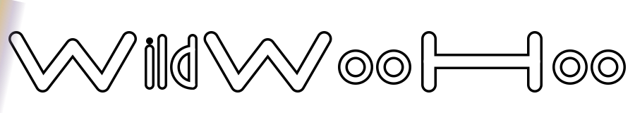

WildWooHoo is a creative studio for the animal kingdom — including us. We draw parallels between animal and human societies through music, audiovisuals and educational materials. The brand is built around two visual ideas: a custom-drawn W (the brand's first letter, also a mirror of itself), and a horizon hairline that runs through the middle of every mark and word — the seam where two worlds meet. The mark hides this duality in a single shape; the wordmark spreads it across "WildWooHoo." Colour stays mostly monochrome at rest, with the full rainbow spectrum appearing only at moments of interaction — like light catching a prism.
The mark · three variants
One W. Three skins.
A horizon-pinched square tile holds the custom W on top, its mirror M underneath, and a horizon hairline between them. The tile itself pinches inward at the horizon — the icon embodies "two worlds meeting" before you even read the W.
Inverted · primary
Cream tile, ink W
The default. Use on dark surfaces and photographic backgrounds. Light tile lets the silhouette punch out like paper. Used in the website header and the favicon.
#FBF7EE + #0E0E0F
Black · alternate
Black tile, cream W
Use on cream or light surfaces where the dark tile gives strong contrast. Good for print, single-ink merch, light-themed slide decks.
#0E0E0F + #FBF7EE
Savanna green · festive
Forest tile, cream W
Festive / warm contexts. Profile pictures on platforms with a green-leaning aesthetic, or moments where the brand wants to feel alive rather than minimal.
#1A4A28 + #FBF7EE
In context — profile picture mocks
Inverted · cream surface
Inverted · night-savanna
Inverted · savanna green
The wordmark
WildWooHoo — outlined
Drawn as outlined geometric monoline letters. Every letter shows two parallel hairlines tracing the borders of a thick stroke — interior is transparent so background images read through. The two Ws and the H share the heavy stroke from the monogram; the lowercase i, l, d, o use a lighter stroke. H is drawn at the same visual width as W so the caps read with equal weight.

On the night-savanna surface
The cardinal rule
Never together
The mark and the wordmark are never used in the same composition. The W in the wordmark already plays the role of the mark — pairing them duplicates the message and weakens both. If a context needs "an icon and a name," use the wordmark only. If it needs just an icon (favicon, app tile, profile picture), use the mark only.
Colour palette
Mostly monochrome, rainbow at contact
The website's primary palette is monochrome — cream surface, ink text, the mark in inverted form. Colour appears as the spectrum only at moments of interaction (hover, focus, active state). Below are the core inks and brand accents you'll actually pick from in everyday work.
Core inks
Cream
#FBF7EE
251, 247, 238
Primary surface. The W in the inverted mark.
Ink
#0E0E0F
14, 14, 15
Primary text. The W in the inverted mark. The black tile.
Sand
#F4ECDD
244, 236, 221
Soft secondary surface. Code blocks, code chips.
Night savanna
#0A1F14
10, 31, 20
Deep green-black for dark surfaces and reverse contexts.
Brand accents
Savanna
#27A05B
39, 160, 91
Links, active states, the centre of the spectrum.
Savanna deep
#1A4A28
26, 74, 40
The green mark's tile. Dense hover emphasis.
Honey
#E5B96D
229, 185, 109
Golden honey — secondary warm accent.
Amber
#B07F30
176, 127, 48
Deep amber — tertiary warm accent.
The spectrum
The rainbow
Sampled pixel-by-pixel from the two reference photos (rainbow-kangaroo at sunset + kangaroo mob in the green savanna). It only ever appears at moments of interaction: hover, focus, active state, the wordmark's signature horizon hairline, the slow ambient cycle on header em words. Never as static decoration.
Red
#C97A66
Peach
#D89E78
Honey
#E5B96D
Savanna
#27A05B
Amber
#B07F30
Sage
#B59B6D
Lavender
#9985A8
Violet
#7D6E92
Typography
Six families, one voice
Each family carries a specific tone. The display face matches the brand W's outline DNA; the editorial serif carries long-form weight; the italic serif and script add personality; Montserrat handles everything else.
Display · Big Shoulders Inline Display · 900
WildWooHoo
For headlines, slide titles, posters, big labels. Closest free typeface to the brand W's outline geometry.
Display solid · Big Shoulders Display · 900
WildWooHoo
When you need a filled (not outlined) display face. Same family, no inline strokes.
Editorial display · DM Serif Display · 400
The animal kingdom
For editorial layouts that want serif gravity. Secondary to the display family above.
Section headlines · Libre Baskerville · 700
Music, audiovisuals, education.
For section headlines and long-form headings that want to feel like a magazine.
Italic emphasis · Instrument Serif Italic · 400
— including us
One emphasised word inside a serif headline. Often paired with the rainbow text fill (as in this page's H2s).
Handwritten · Caveat · 700
a love letter to behaviour
For handwritten emphasis, captions under photography, signature lines, "personal" voice moments.
Body / UI · Montserrat · 400 / 500 / 700
Despite all the worlds we have built, biologically we remain part of the animal kingdom. We start in animal behaviour, ecology and evolution and translate it through music, music videos, animation, books, and public performance.
For body copy, navigation, UI labels, lists, captions. Anything that isn't a headline.
Installing the fonts
All six families are free Google Fonts. For the web, paste this into <head>:
For Keynote / PowerPoint / Pages / Word, download each .ttf from fonts.google.com/specimen/<family-name> and install on your system. They'll appear in every desktop app's font picker. In Canva, all but Big Shoulders Inline Display are pre-loaded; upload the .ttf via Canva Pro's Brand Kit if you need the inline variant.
How the mark and the wordmark talk
One W, one horizon
They share one shape and one device:
The mark
The W compressed into a square. The W sits on top, its mirror M sits underneath, and the horizon hairline is the seam between them. The whole brand is hidden inside one tile.
The wordmark
The W stretched into a word. The same custom W path appears as the capital W at the start of "Wild" and at the start of "Woo." The H of "Hoo" is drawn at the same width as W so the caps read with equal weight. The horizon hairline lives implicitly in the seam of every letter.
The spectrum
Stays out of both at rest. Appears only in motion — the mark's hover rim, the wordmark's hover shine, the CTA sweep on every button, the slow ambient cycle on header em words. Three different motions, one shared palette.
The tension
Monochrome at rest, rainbow at contact. Quiet most of the time, alive in the moments of contact. That's the whole brand.
Files in this kit
Download what you need
SVG for vector use (the website, slide masters, Figma, scaling without loss). PNG for raster use (Canva, Gmail signatures, social profiles, presentations). Right-click any link → "Save as…" to save the file.
Website header, favicon, app tile → monogram-inverted.svg
Social profile pictures (IG, LI, TikTok) → monogram-inverted-1024.png
LinkedIn personal banner (1584×396) → wordmark-2400.png on night-savanna
Slide title masters → wordmark-2400.png on cream
Posters / merch (vector) → wordmark.svg (single ink works)
Email signature → wordmark-1200.png (cap height ~80px)
Watermark on photography → monogram-black-128.png @ 30-40% opacity
Trademark filing → monogram-black.svg + wordmark.svg
Print (≥A3) → all SVGs or PNG @ 2048/4800
For Canva, Gmail, presentations & sharing
Quick start in every tool
Canva (Pro recommended)
Upload the SVGs to your Brand Kit → Logos. They scale without quality loss. Paste the hex codes from §Colour into your Brand Kit → Colours. Six of the seven brand fonts are in Canva's library (search by name); upload Big Shoulders Inline Display via Brand Kit → Upload font using the .ttf from Google Fonts.
Google Slides / Docs
Insert → Image → Upload from computer. Slides accepts SVG since 2023 (Docs prefers PNG). For body text, change theme fonts to Montserrat (body) + Libre Baskerville (headings) + Big Shoulders Display (display) via the "more fonts" picker. The rainbow header text effect in this kit is web-only — in Slides, use a solid color (e.g., #B07F30 amber) for emphasis.
Keynote / PowerPoint / Pages / Word
Use the PNG version (these apps don't render SVG with full fidelity). Use the 2048 monogram PNG or 4800 wordmark PNG for highest quality. Install all six font families from Google Fonts on the system first.
Figma
Drop the SVGs into a new file. The mask-based wordmark renders with full outline fidelity. Set up Figma Colour styles using the hex codes from §Colour, and Text styles using the families from §Typography.
Gmail signature
Upload the 1200-wide wordmark PNG to your domain (or any image host). Reference the URL in your Gmail signature image. Recommended max 200px tall on display. Pair with system fonts for body text — custom fonts don't carry across email clients.
Sharing the whole kit
This brand-kit/ directory is self-contained. Zip it (zip -r wildwoohoo-brand-kit.zip brand-kit/) and email or upload to Drive / Dropbox / WeTransfer. Recipients get every file plus the README.md reference doc and this visual page.
Commercial use & trademark
For registering the brand
The mark and the wordmark are two separate intellectual works — register them as separate trademarks for maximum protection.
The mark
Submit monogram-black.svg (the black-and-white version is what trademark offices prefer for unrestricted colour use). Description: "A horizon-pinched square tile containing a stylised W glyph in the upper half, its mirror M in the lower half at reduced opacity, separated by a horizontal hairline." Class 9 (digital / audiovisual goods) and/or Class 41 (entertainment, education services).
The wordmark
Submit wordmark.svg. Description: "The wordmark 'WildWooHoo' rendered in a custom geometric monoline outlined typeface. The capital letters W and H are drawn at equal cap-width and use a heavier stroke than the lowercase i, l, d, o. The interior of each glyph is transparent." Same classes.
Owner & first use
WildWooHoo is owned by Dr Weliton Menário Costa (Brazilian-Australian behavioural ecologist, PhD ANU). First use of the v4 brand identity: 2026-05-21. Earlier iterations exist in the project's git history if continuity-of-use needs to be demonstrated.
Domain & contact
Domain wildwoohoo.com — registered. Contact: hello@wildwoohoo.com. The colour palette and the spectrum live in this kit but typically aren't claimed in standard wordmark/figurative trademark filings.
{kind=link}
{kind=link}
{kind=link}
{kind=link}
{kind=link}
{kind=link}
{kind=link}
{kind=link}
{kind=link}
{kind=link}
{kind=link}
{kind=link}
{kind=link}
{kind=link}
{kind=link}
{kind=link}
{kind=link}
{kind=link}
{kind=link}
{kind=link}
{kind=link}
{kind=link}
{kind=link}
{kind=link}
{kind=link}